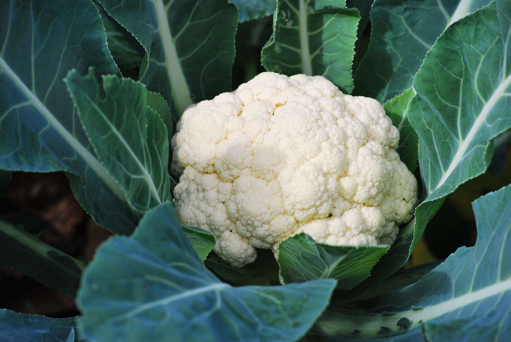
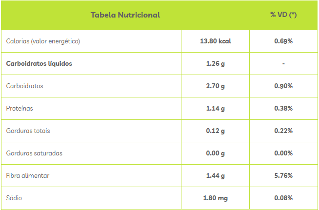
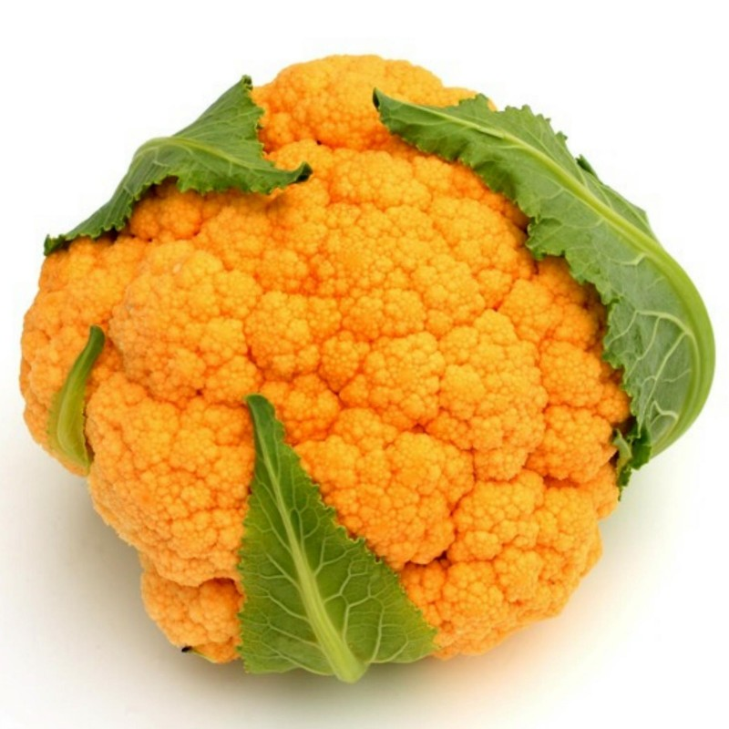
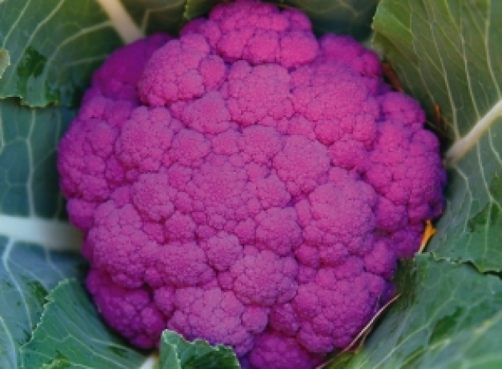
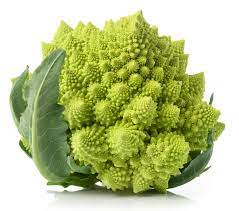
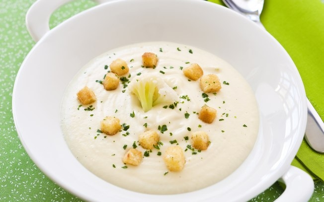

COUVE-FLOR

Informações nutricionais
A couve-flor é uma hortaliça rica em glicosinolatos, sulforafanos e isotiocianatos,
que são compostos bioativos com potente ação antioxidante e anti-inflamatória, ajudando
a prevenir o surgimento de doenças cardiovasculares, diabetes e câncer. Além disso, a
couve-flor também ajuda no emagrecimento, já que contém boas quantidades de fibras que
ajudam a aumentar a sensação de saciedade, controlando a fome ao longo do dia.

Plantio e época de colheita
As sementes de couve-flor são cultivadas em sementeiras, vasos ou diretamente nos
canteiros da horta. Coloque-as a 1 centímetro de profundidade e mantenha a distância entre as linhas de 60 a 90 cm
para os cultivares de verão. O espaçamento indicado para os cultivares de inverno é de 50 a 75 cm.
A germinação das sementes demora de uma a duas semanas. Se o plantio foi feito em sementeiras, faça o transplante
para o local definitivo quando as couves estiverem com, aproximadamente, 5 folhas.
Deve ser irrigada com frequência, para manter o solo sempre úmido, mas nunca encharcado. É importante lembrar que a
couve-flor é uma planta muito sensível à falta de água no solo.
O tempo exato para colheita da couve-flor varia muito, mas costuma ocorrer em 120 dias após a semeadura. Colha a
couve-flor enquanto estiver firme e com aparência compacta.
Variações da couve-flor
Além da couve-flor branca como normalmente conhecemos, existem outros 3 tipos de
couve-flor, são elas: a laranja, a roxa e a verde.



Receitas com couve-flor
1.Couve-flor gratinada
Ingredientes
-1 couve-flor média;
-1 copo de requeijão;
-2 ovos;
-50 g de queijo ralado;
-200 g de mussarela;
-cheiro-verde;
-1 tomate picadinho;
-margarina para untar.
Modo de preparo
Cozinhar a couve-flor com sal até ficar bem macia; escorra e coloque em forma untada com
margarina; acrescente o requeijão (colheradas espalhadas); bata os ovos e junte 25 g de queijo ralado, cheiro verde e
o tomate; jogue os ovos batidos por cima da couve-flor; cubra com a mussarela, polvilhe com o restante do queijo ralado;
leve ao forno para gratinar.
2.Sopa Cremosa de Couve-flor e Brócolis

Ingredientes
-1 colher (sopa) de azeite;
-1 cebola picada;
-1 dente de alho amassado;
-1 couve-flor pequena;
-1 xícara (chá) de brócolis picado;
-2 tabletes de caldo Legumes;
-1 Caixinha de creme de Leite;
-1 colher (sopa) de salsa picada.
Modo de preparo
Em uma panela, aqueça o azeite e refogue a cebola e o alho; junte a couve-flor, o brócolis e
o caldo de legumes dissolvido em 1 litro de água quente; tampe e cozinhe em fogo médio por cerca de 20 minutos; espere
amornar e bata no liquidificador; volte à panela e deixe ferver; junte o creme de Leite e a salsa e misture bem; sirva a
seguir com torradinhas de pão ou como preferir.
Murilo Martins 2023 - ©Todos os direitos reservados